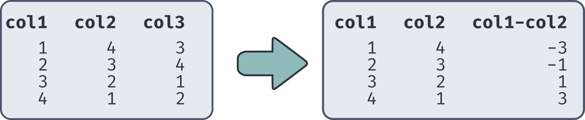

Jed Rembold
Tuesday, January 25, 2022
CREATE TABLE purchases (
"date" DATE,
"store" VARCHAR(20),
"purchased" TEXT,
"tot_price" NUMERIC(10,2));How to import the data to the right into the above table?
date:store:purchased
Jan-5-22:Walmart:eggs,milk
Jan-10-22:Roths:cereal,steak
Jan-16-22:Roths:milk,butter
Jan-18-22:Winco:beansCOPY purchases
FROM 'C:\DATA\purchases.csv'
WITH (FORMAT CSV, HEADER);COPY purchases (date, store, purchased)
FROM 'C:\DATA\purchases.csv'
WITH (FORMAT CSV, HEADER,
DELIMITER ':');COPY purchases (date, store, purchased)
FROM 'C:\DATA\purchases.csv'
WITH (FORMAT CSV, DELIMITER ':');COPY purchases (date, store)
FROM 'purchases.csv'
WITH (FORMAT CSV, HEADER,
DELIMITER ',');NULL values in your output
querycolname != NULL
NULL value comparison always
gives NULL, no matter the comparisonIS NOT NULL (or
IS NULL if you want to find the null
values)SELECT colname
FROM tablename
WHERE colname IS NOT NULL;-- to turn
everything following on that line to a comment-- This is a comment
SELECT *
FROM table_name -- this is my table name
ORDER BY col1;SELECT statements on values
directly if needed, omitting a reference to a table!
FROM portion of the
statementSELECT CAST('Jan 25, 2022' AS DATE);SELECT 'aardvark' > 'Zebra';| Operator | Description | Example |
|---|---|---|
+ |
Addition | 4 + 5 |
- |
Subtraction | 10 - 5 |
* |
Multiplication | 2 * 4 |
/ |
Division | 20 / 5 |
SELECT 5 * 4 / 2;| Operator | Description | Example |
|---|---|---|
% |
Modulo (remainder) | 7 % 5 |
^ |
Exponentiation | 3 ^ 2 |
|/ |
Square root | |/9 |
||/ |
Cube root | ||/27 |
! |
Factorial | 5! |
@ |
Absolute value | @ -42 |
SELECT 5! % 7;pg_typeof() function can be useful
at times if you need to check a data typeSELECT 4 ^ (9 % 2 + 1);What would be the output of the below selection?
SELECT (1 + 2) ^ (9 % (10 - 4) / 2) * 2::REAL;| Function | Description |
|---|---|
sqrt(num) |
Square root |
abs(num) |
Absolute value |
factorial(num) |
Factorial of a number |
sin(num) |
Sine of radians |
sind(num) |
Sine of degrees |
asin(num) |
Inverse sine in radians |
degrees(num) |
Convert radians to degrees |
log(num) |
Base 10 logarithm |
ln(num) |
Base e logarithm |
round(num,scale) |
Round number to scale decimal places |
You may have noticed that the default column names when selecting a calculation can be nonsensical
SQL provides a way for you to name a column on the fly, using the
AS keyword
Technically forms what is commonly called an alias
Syntax:
SELECT (calculation) AS col_name;You can then refer to that column name later in your command if you want or need
ORDER BY or (later)
GROUP BYWHERE or (later)
HAVINGSELECT col1, col2, col1 - col2 FROM tablename;
TEMP keyword
AS keywordCREATE TEMP TABLE my_temp_table AS (
SELECT col1, col2, ... FROM existing_table
);